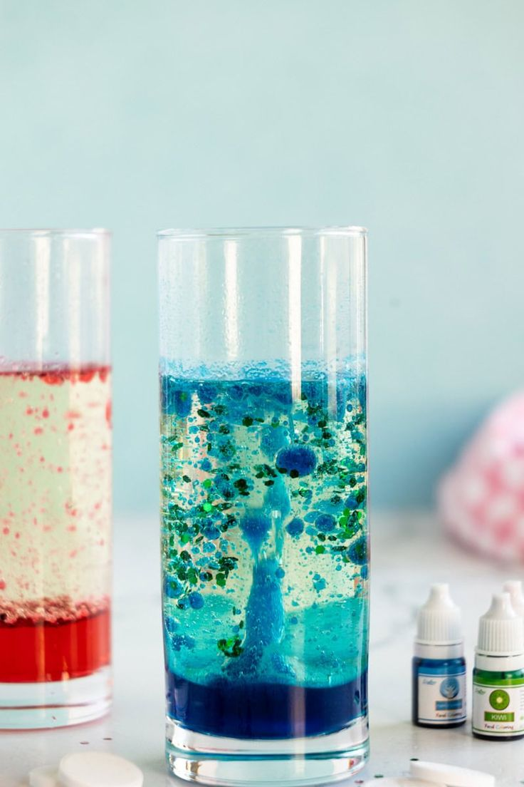

PENJELASAN LAVALAMP
Lava lamp atau lampu lava adalah jenis lampu dekoratif berbentuk tabung kaca yang menampilkan gumpalan cairan warna-wangi yang bergerak naik dan turun secara lambat di dalam cairan lainnya. Lampu unik ini diciptakan oleh Edward Craven Walker, seorang akuntan asal Inggris, pada tahun 1963 di bawah nama perusahaan Crestworth (yang kemudian dikenal sebagai Mathmos). Keindahan lampu lava tidak memancarkan cahaya yang cukup terang untuk membaca, melainkan berfungsi sebagai lampu hias (mood lighting) yang memberikan efek visual menenangkan berkat gerakannya yang berirama hipnotis dan bernuansa retro.